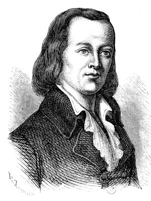

"Si tratta di uno strumento ad asta, su cui è installato un braccio rotante che porta alle estremità due bracci minori. I tre pezzi mobili sono azionati da un gioco di corde, pulegge e contrappesi; Il braccio maggiore può assumere quattro posizioni fisse, i due minori, sette ognuno per un totale di 4x7x7=196 diverse combinazioni possibili."
I precedessori del telegrafo
Storicamente, gli antichi Greci e Romani avevano già fatto qualcosa di simile con giochi di specchi o altro, nel medioevo, anche qui, si usavano, fin dal X secolo le famose torri di guardia che, dislocate a distanza dal Castello Sforzesco, con fumi o segnali ottici, preavvisavano le guarnigioni a difesa della città, dell’imminente arrivo dei nemici. I primi sistemi di telegrafia vennero presumibilmente realizzati a scopo militare mediante fuochi accesi in punti elevati e visibili a grandi distanze, di giorno per il fumo, di notte per la luce. C’era però una differenza: nessuno aveva mai pensato ad inventare un ‘linguaggio’ che consentisse di trasmettere o ricevere messaggi veri, non pre-codificati.
Illustrazione di una torre d'avvistamento utilizzata dai romani per comunicare.
Sembra che i Cartaginesi usassero un telegrafo ottico che merita di essere ricordato quale precursore dei telegrafi a sincronismo: ciascuna delle stazioni corrispondenti aveva un vaso cilindrico pieno d'acqua e munito inferiormente di un rubinetto; un bastoncino infisso in un galleggiante portava raffigurati a differenti altezze gli avvenimenti militari più comuni. I due vasi erano del tutto uguali. Polibio, storico e politico greco del III sec. a.C. trovò un’altra soluzione ideando un sistema per trasmettere qualsiasi tipo di messaggio. Polibio capì che le torce utilizzate nel sistema di Enea il Tattico potevano essere utilizzate per trasmettere sia i segnali di sincronismo sia l’informazione vera e propria. Creò allora un codice fatto da una tabella di 5 righe e 5 colonne, che esprimeva 25 lettere dell’alfabeto. Il sistema di trasmissione si basava sulle torce sollevate dalle due mani di un uomo. Alla mano sinistra erano associate le righe ad alla destra le colonne. Per trasmettere, ad es., la lettera B (codificata in 12) l’uomo sollevava una torcia nella mano sinistra e due torce nella mano destra. Il telegrafo a fiaccole di Polibio è stato tra i sistemi di telecomunicazioni più utilizzato nella storia, almeno fino quasi al XVIII secolo. I Romani realizzarono questo sistema di trasmissione impiantandolo sulle torri di segnalazione lungo le consolari e le strade costiere. Ai tempi di Giulio Cesare un messaggio così trasmesso da Roma impiegava appena un giorno per raggiungere la Gallia. Nel periodo imperiale i Romani crearono una vera e propria rete di torri di segnalazione, che partiva da Roma e, seguendo la costa, arrivava in Francia, proseguiva per la Spagna, raggiungeva le coste africane, l’Egitto, fino all’attuale medio oriente; una copertura di 1500 città e villaggi per oltre 12.000 Km. Per giungere dall’altra parte del mediterraneo il messaggio impiegava due giorni. In Sardegna, a causa delle frequenti incursioni dei Barbari, si iniziarono a costruire delle torri di avvistamento a partire dal 1572. Un piccolo contingente di soldati, quando avvistava le navi nemiche, dava l’allarme con segnali di fumo creato mendiante un padellone di ferro che veniva caricato con erica bagnata e bitume e poi incendiato. Nel 1588, al largo delle coste di Plymouth venne avvistata l’Armata Spagnola. Londra distava 300 Km e la notizia arrivò dopo 20 minuti, trasmessa attraverso le fiaccole da una catena di torri distanti 12 Km l’una dall’altra.
Vasi del telegrafo idraulico di Enea il tattico, ripresi in considerazione nella telegrafia verso la fine del secolo XVIII.
Chi ha inventato il telegrafo
Claude Chappe (1761-1805), un giovane fisico di Brulon, disoccupato come i suoi tre fratelli, desiderando comunicare con gli amici che abitavano ad una certa distanza da casa sua, decise di sviluppare, con i fratelli, un sistema di comunicazione a distanza mediante segnalazioni meccaniche.
Si trattava di uno strumento ad asta, su cui era installato un braccio rotante che portava alle estremità due bracci minori.
I tre pezzi mobili erano azionati da un gioco di corde, pulegge e contrappesi; Il braccio maggiore poteva assumere quattro posizioni fisse, i due minori, sette ognuno per un totale di 4x7x7=196 diverse combinazioni possibili. Ad ogni configurazione, si poteva dare, a piacere, diverso significato: lettere, numeri e ordini di servizio. Le postazioni dovevano essere necessariamente a vista: questo significa che la distanza massima fra due postazioni successive non poteva essere superiore ai 10-15 Km. Bisognava ovviamente dotarsi di ‘binocolo’, strumento già noto ai tempi di Galileo per scopi di ‘astronomia’, ma perfezionato ad uso ‘terrestre’ solo di recente (1750). Dalla postazione successiva a quella di partenza, il messaggio veniva letto da un addetto con ‘binocolo’ e veniva ritrasmesso alla stazione seguente, e così via, fino ad arrivare a destinazione.
Due erano i limiti di questo sistema:
non poteva funzionare di notte;
funzionava male nelle giornate di scarsa visibilità dovute a nebbie o condizioni atmosferiche avverse.
Il problema di privacy poteva essere ‘bypassato’, crittografando il messaggio con un codice noto soltanto al mittente e al destinatario finale. I vantaggi però, per i tempi di allora, erano innegabili: un messaggio, sulla distanza Parigi-Lille di 200 km, prevedendo una quindicina di stazioni intermedie, veniva ricevuto a destinazione nell’arco di circa mezz’ora, tenendo conto pure dei tempi di transcodifica. Era una velocità incredibile allora, considerando che un messo a cavallo, avrebbe potuto recapitare la missiva non prima di cinque o sei ore.
Illustrazione raffigurante il telegrafo ottico di Chappe

Claude, a dire il vero, stava, per conto suo, tentando di sperimentare la trasmissione di impulsi elettrici, realizzabile grazie all’uso di cavi, ma vista la difficoltà pratica a realizzare un ‘telegrafo elettrico’, si indirizzò verso un più semplice sistema. Claude e i suoi fratelli, dopo una serie di prove, nel 1793, presentarono all’Assemblea Legislativa, a Parigi, la loro invenzione, facendone omaggio allo Stato.
Il telegrafo diventa un punto di forza per Napoleone
Infatti l’innovazione, presentata a Napoleone con l’esperimento della trasmissione dati Parigi-Lille, fu da lui immediatamente vista in chiave militare e venne subito sperimentata sui campi di battaglia, con la creazione di stazioni mobili. È evidente che la rapidità della notifica, al centro comando, di qualunque informazione concernente, ad esempio, i movimenti delle truppe nemiche sul campo di battaglia, dava la possibilità a Napoleone, di prendere, in anticipo, tutte le misure necessarie per contrastare l’attacco. Questo gli dava una indubbia posizione di vantaggio su qualunque nemico che naturalmente non avrebbe più potuto ‘giocare’ sul fattore sorpresa. Passato felicemente questo test, Napoleone ordinò immediatamente la costruzione di una rete di collegamenti telegrafici, prima in Francia collegando Parigi con le grandi piazzeforti strategiche lungo il mare e vicino la frontiera sud (ad esempio la Parigi-Lione), poi, a livello internazionale, collegando la capitale francese con Magonza, Anversa ed Amsterdam.
Con la invenzione del semaphore meccanico, Chappe dovette anche creare un sistema di linguaggio codificato. Grazie alle elevate differenti posizioni che i bracci potevano assumere, Chappe fu in grado di creare un alfabeto codificato. Questo sistema alfabetico verrà poi migliorato nel corso degli anni con l’arrivo del codice Morse.
L’utilizzo al giorno d’oggi
In Marina viene impiegato tuttora un telegrafo ottico costituito da un piccolo faro che può essere oscurato o meno agendo su una levetta. Si tratta di una forte lampada capace di produrre un fascio ben collimato, rinviato da uno specchio sferico o paraboloidico. Un sistema di lamelle orizzontali può essere manovrato con una levetta, come una tenda “alla veneziana”, e con ciò liberare o bloccare il fascio. Così è possibile inviare segnali Morse da una nave ad un’altra per mezzo di impulsi di luce. Un altro sistema impiega due bandierine impugnate da un marinaio che, assumendo diverse posizioni, codifica lettere e segnali standard. Altri tipi di bandiere sono usati nel Codice Internazionale Nautico. In fondo, sia pure a brevissima distanza, anche il codice gestuale dei sordi è una forma di comunicazione ottica; il singolo messaggio esprime spesso una parola, un concetto, un’intera frase.